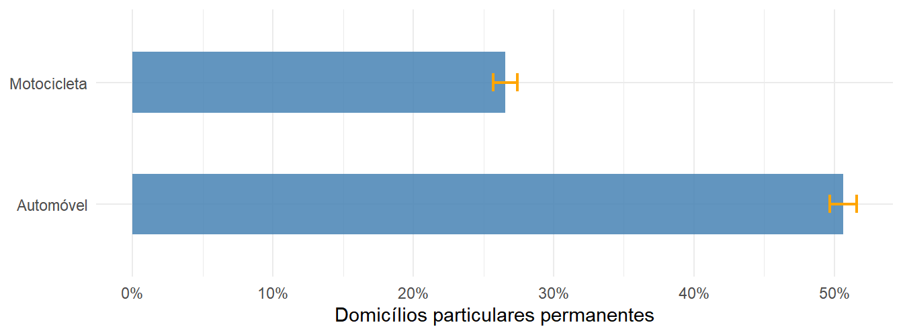
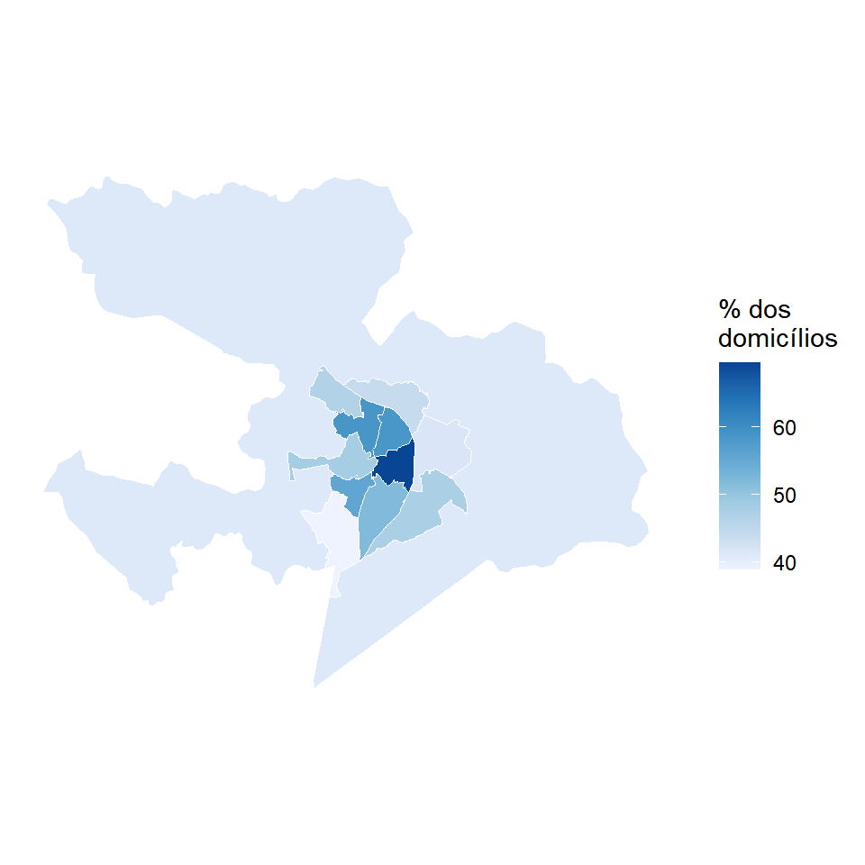
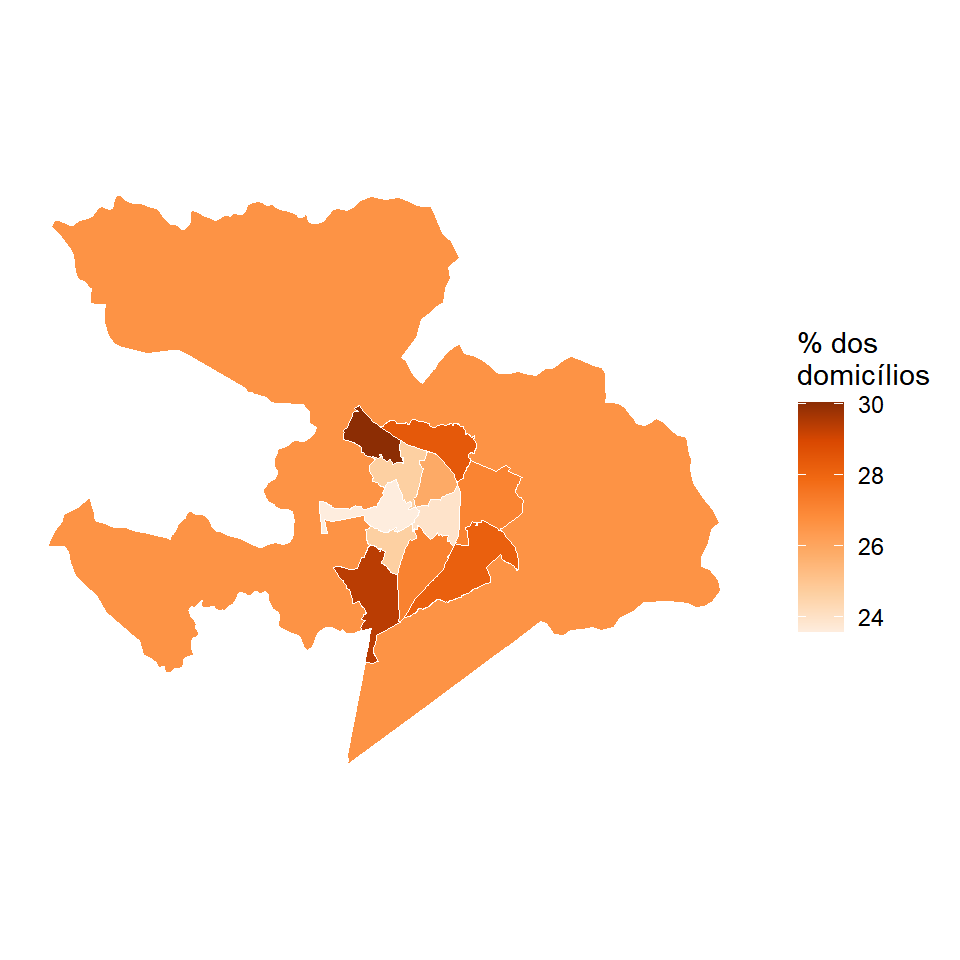
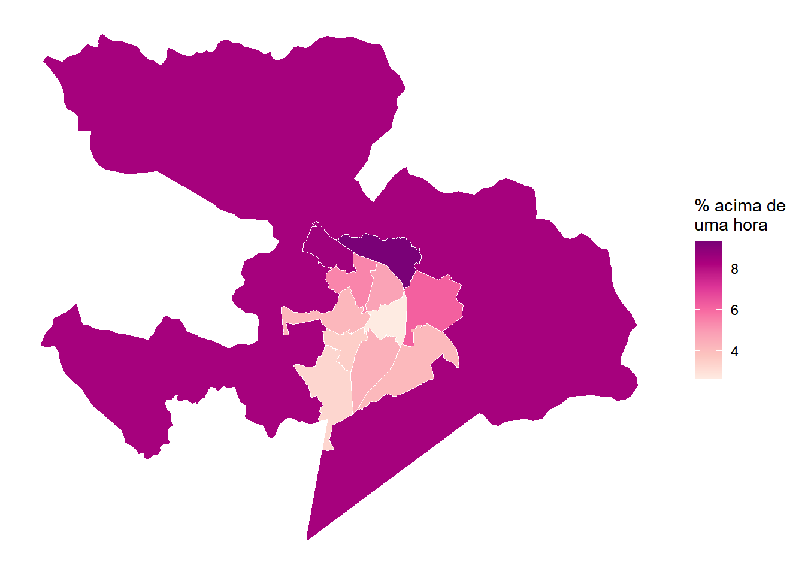

library(censobr)
library(geobr)
library(sf)
library(dplyr)
library(tidyr)
library(srvyr)
library(ggplot2)4 Microdados da amostra
Os agregados respondem quantos, e os microdados respondem quem. É aqui que as perguntas de transporte finalmente aparecem no Censo, porque o questionário da amostra investiga posse de veículo no domicílio, local de trabalho e tempo habitual de deslocamento até o trabalho, temas que o questionário básico não cobre. O preço dessa riqueza é metodológico, uma vez que cada registro representa um número variável de pessoas do universo, e ignorar essa ponderação produz estimativas simplesmente erradas.
NotaNesta seção você vai
- entender por que este capítulo trabalha com o Censo 2010, e não com o de 2022
- ler os microdados de domicílios e de pessoas de Anápolis com o
censobr - declarar o desenho amostral com o
srvyre produzir estimativas com intervalo de confiança - estimar a posse de automóvel e de motocicleta por área de ponderação
- delimitar corretamente o universo do indicador de tempo de deslocamento
- mapear o tempo de deslocamento e julgar se os contrastes observados são reais
DicaScript deste capítulo
Abra o arquivo scripts/4-microdados.R no projeto da oficina. É nele que vai o código apresentado a seguir. Se ainda não tiver o projeto, volte ao Capítulo 1.
4.1 Por que 2010, e não 2022
Os microdados da amostra do Censo 2022 foram divulgados em 31 de agosto de 2026, em um modelo de acesso inteiramente novo, organizado em três níveis e motivado pelo risco de reidentificação dos respondentes, agravado pelo avanço das ferramentas de inteligência artificial, e pela intenção de coibir o uso comercial e publicitário dos registros. Nomes, CPF e endereços não integram base alguma disponibilizada ao público (IBGE, 2026).
O primeiro nível é o de acesso público, aberto a qualquer pessoa e sem cadastro, cujo detalhe geográfico vai somente até a Unidade da Federação. O segundo é o de acesso controlado, que exige autenticação por conta gov.br e assinatura de termo de compromisso, e entrega a cada pesquisador um arquivo individualmente rastreável. O terceiro é a Sala de Acesso Restrito, presencial na sede do IBGE, no Rio de Janeiro, para a qual é preciso submeter projeto de pesquisa e da qual os dados não saem.
O detalhe geográfico é o que decide a questão para nós. Análise intramunicipal de transportes exige descer abaixo do município, e é isso que o nível público não permite. Some-se a isso que o IBGE não autoriza a redistribuição dos arquivos do nível controlado, de modo que nenhum pacote de R pode baixá-los por você.
NotaA solução do censobr para 2022
O censobr acompanhou a mudança. A versão em desenvolvimento traz a função import_microdata22_controlado(), que recebe o caminho do .zip que você obteve junto ao IBGE, processa os arquivos e os guarda no cache local em formato parquet. Feita a importação uma única vez, as funções de leitura de sempre, como read_population(year = 2022) e read_households(year = 2022), passam a funcionar para 2022. O procedimento está documentado em https://ipea.github.io/censobr/dev/articles/microdata_2022.html.
Nesta oficina ficamos com 2010, por três razões. Os arquivos são de acesso livre, o censobr os baixa sozinho, e o detalhe geográfico desce até a área de ponderação, que é o recorte de que precisamos. Vale registrar que os dados têm quinze anos e não descrevem a Anápolis de hoje. O que eles ensinam é o método, e o método é o mesmo que você aplicará aos arquivos de 2022 quando os obtiver.
4.2 O desenho amostral
Cerca de um em cada dez domicílios respondeu ao questionário da amostra, e a seleção não foi um sorteio simples. Cada registro carrega um peso, em V0010, que informa quantas unidades do universo ele representa, e a amostra é estratificada por área de ponderação. No arquivo de pessoas há ainda o conglomerado, porque as pessoas foram observadas em grupos, os domicílios, e moradores do mesmo domicílio se parecem mais entre si do que duas pessoas quaisquer.
Ignorar essa estrutura tem duas consequências distintas. Ignorar o peso enviesa a estimativa pontual. Ignorar o estrato e o conglomerado mantém a estimativa e estraga o erro-padrão, que é o que diz se uma diferença observada é real. O pacote srvyr resolve os dois problemas de uma vez, ao declarar o desenho com as_survey_design() e substituir mean() por survey_mean().
4.3 Preparação dos dados
Precisamos do código do município e da malha de áreas de ponderação de 2010, que é a base de todos os mapas deste capítulo e também a fonte do vetor de códigos que filtra os microdados.
anp_code <- lookup_muni(year = 2022, name_muni = "Anápolis")$code_muni
anp_ap_geo10 <- read_weighting_area(code_weighting = anp_code, year = 2010,
simplified = FALSE, showProgress = FALSE)
ap_cods <- anp_ap_geo10 |>
pull(code_weighting)
length(ap_cods)[1] 12São doze áreas para um município que tinha cerca de 335 mil habitantes em 2010. É uma resolução bem mais grossa que a dos setores censitários do capítulo anterior, e adiante veremos que isso cobra o seu preço na precisão das estimativas.
Usaremos os dois arquivos de microdados. A posse de veículo é característica do domicílio, enquanto o local de trabalho e o tempo de deslocamento são características da pessoa. Começamos pelos domicílios, pedindo também V4001, que identifica o tipo de domicílio, por uma razão que fica clara logo abaixo.
cols_dom <- c(
"V0300", # identificador do domicílio
"V0010", # peso amostral calibrado
"code_weighting", # área de ponderação
"V4001", # tipo de domicílio
"V0221", # motocicleta para uso particular
"V0222" # automóvel para uso particular
)
anp_dom <- read_households(year = 2010, columns = cols_dom, showProgress = FALSE) |>
filter(code_weighting %in% ap_cods) |>
collect()
anp_dom |>
count(V0222)# A tibble: 3 × 2
V0222 n
<chr> <int>
1 1 4848
2 2 4819
3 <NA> 100Há registros sem resposta, e antes de aplicar um na.rm = TRUE distraído convém entender de onde vêm. O cruzamento com o tipo de domicílio resolve a dúvida.
anp_dom |>
group_by(V4001) |>
summarize(registros = n(), sem_resposta = sum(is.na(V0222)))# A tibble: 3 × 3
V4001 registros sem_resposta
<chr> <int> <int>
1 01 9667 0
2 05 19 19
3 06 81 81Todos os ausentes estão nos tipos 05 e 06, que são o domicílio particular improvisado e o domicílio coletivo. O quesito de bens duráveis só é aplicado a domicílios particulares permanentes, de código 01, e por isso os demais chegam em branco. É um caso de “não se aplica”, e não de recusa.
A conduta correta não é descartar os ausentes, e sim restringir a análise ao universo em que a pergunta foi feita. Esse recorte, porém, não é aplicado à tabela. Declaramos o desenho sobre todos os domicílios lidos e só então filtramos o próprio desenho. O objeto resultante mantém a estratificação e a correção de população finita originais e passa a tratar os domicílios particulares permanentes como um domínio dentro da amostra, que é o que eles de fato são.
anp_dom <- anp_dom |>
left_join(
anp_dom |>
group_by(code_weighting) |>
summarize(n_dom = sum(V0010)),
by = join_by(code_weighting)
)
pa_dom <- anp_dom |>
as_survey_design(
strata = code_weighting,
weights = V0010,
fpc = n_dom
)
pa_dpp <- pa_dom |>
filter(V4001 == "01")O arquivo de pessoas segue a mesma lógica, com o acréscimo do identificador do domicílio como unidade de conglomeração, em ids.
cols_pes <- c(
"V0300", # identificador do domicílio (conglomerado)
"V0010", # peso amostral calibrado
"code_weighting", # área de ponderação
"V0660", # município ou país onde trabalha
"V0661", # retorna do trabalho para casa diariamente
"V0662" # tempo habitual de deslocamento até o trabalho
)
anp_pes <- read_population(year = 2010, columns = cols_pes, showProgress = FALSE) |>
filter(code_weighting %in% ap_cods) |>
collect()
nrow(anp_pes)[1] 30960anp_pes <- anp_pes |>
left_join(
anp_pes |>
group_by(code_weighting) |>
summarize(n_ind = sum(V0010)),
by = join_by(code_weighting)
)
pa_pes <- anp_pes |>
as_survey_design(
ids = V0300,
strata = code_weighting,
weights = V0010,
fpc = n_ind
)Com os dois desenhos declarados, podemos estimar.
4.4 Posse de automóvel e motocicleta
A posse de veículo não mede mobilidade, mas possibilidade. Um domicílio com automóvel dispõe de uma alternativa de deslocamento que outro não tem, e essa diferença influencia todo o restante, do tempo de viagem à sensibilidade quanto à qualidade do transporte público. Comecemos pelo retrato municipal, com os intervalos de confiança que o desenho amostral exige. Os dois veículos vêm de variáveis diferentes, e por isso cada um exige uma chamada própria a survey_mean(), empilhadas com bind_rows() para chegar ao formato longo que o ggplot2 espera.
posse_mun <- bind_rows(
pa_dpp |>
summarize(proporcao = survey_mean(V0222 == "1", vartype = "ci")) |>
mutate(veiculo = "Automóvel"),
pa_dpp |>
summarize(proporcao = survey_mean(V0221 == "1", vartype = "ci")) |>
mutate(veiculo = "Motocicleta")
)
posse_mun# A tibble: 2 × 4
proporcao proporcao_low proporcao_upp veiculo
<dbl> <dbl> <dbl> <chr>
1 0.506 0.497 0.516 Automóvel
2 0.266 0.257 0.274 Motocicletaggplot(posse_mun, aes(x = veiculo, y = proporcao,
ymin = proporcao_low, ymax = proporcao_upp)) +
geom_col(fill = "steelblue", alpha = 0.85, width = 0.5) +
geom_errorbar(width = 0.15, color = "orange", linewidth = 0.8) +
coord_flip() +
scale_y_continuous(labels = scales::label_percent(decimal.mark = ",")) +
labs(x = NULL, y = "Domicílios particulares permanentes") +
theme_minimal()
Metade dos domicílios particulares permanentes de Anápolis tinha automóvel em 2010, e mais de um quarto tinha motocicleta. O segundo número é o que chama atenção, porque a motocicleta em Anápolis não é fenômeno marginal, e sim um modo de transporte de massa. As barras de erro quase desaparecem sobre as colunas, e é o esperado, uma vez que a amostra é grande e o cálculo foi feito para o município inteiro. Ao descer à área de ponderação elas voltarão a ter tamanho.
veic_ap <- pa_dpp |>
group_by(code_weighting) |>
summarize(
automovel = survey_mean(V0222 == "1"),
motocicleta = survey_mean(V0221 == "1")
)
veic_geo <- anp_ap_geo10 |>
left_join(veic_ap, by = join_by(code_weighting))
tema_mapa <- theme_minimal() +
theme(axis.text = element_blank(), axis.ticks = element_blank(),
panel.grid = element_blank())
ggplot(veic_geo) +
geom_sf(aes(fill = 100 * automovel), color = "white", linewidth = 0.2) +
scale_fill_distiller(palette = "Blues", direction = 1,
name = "% dos\ndomicílios", na.value = "gray90") +
tema_mapa
ggplot(veic_geo) +
geom_sf(aes(fill = 100 * motocicleta), color = "white", linewidth = 0.2) +
scale_fill_distiller(palette = "Oranges", direction = 1,
name = "% dos\ndomicílios", na.value = "gray90") +
tema_mapa

Cada veículo tem escala própria, porque as amplitudes são muito diferentes e uma escala comum apagaria o padrão da motocicleta. Vale medir essas amplitudes.
veic_ap |>
summarize(
auto_minimo = 100 * min(automovel),
auto_maximo = 100 * max(automovel),
moto_minimo = 100 * min(motocicleta),
moto_maximo = 100 * max(motocicleta)
)# A tibble: 1 × 4
auto_minimo auto_maximo moto_minimo moto_maximo
<dbl> <dbl> <dbl> <dbl>
1 38.8 69.6 23.6 30.0O automóvel varia cerca de trinta pontos percentuais entre as áreas de ponderação, desenhando a segregação de renda do município. A motocicleta varia pouco mais de seis pontos e está presente em toda parte, o que reforça a leitura de que ela cumpre em Anápolis o papel de transporte cotidiano acessível, e não o de alternativa restrita a algumas áreas.
4.5 Local de trabalho
A variável V0660 informa onde a pessoa ocupada exercia o trabalho principal, e precisa vir antes do tempo de deslocamento por uma razão prática. É ela que define quem se desloca, e portanto quem entra no denominador do indicador de tempo.
pa_pes |>
filter(!is.na(V0660)) |>
mutate(
local = factor(
V0660,
levels = c("1", "2", "3", "4", "5"),
labels = c("No próprio domicílio",
"Apenas neste município, fora do domicílio",
"Em outro município", "Em país estrangeiro",
"Em mais de um município ou país")
)
) |>
group_by(local) |>
summarize(proporcao = survey_prop(vartype = "ci")) |>
knitr::kable(
col.names = c("Local de trabalho", "Proporção",
"IC 95%, limite inferior", "IC 95%, limite superior"),
digits = 4,
format.args = list(decimal.mark = ",")
)| Local de trabalho | Proporção | IC 95%, limite inferior | IC 95%, limite superior |
|---|---|---|---|
| No próprio domicílio | 0,1949 | 0,1866 | 0,2035 |
| Apenas neste município, fora do domicílio | 0,7527 | 0,7436 | 0,7616 |
| Em outro município | 0,0360 | 0,0328 | 0,0395 |
| Em país estrangeiro | 0,0004 | 0,0002 | 0,0010 |
| Em mais de um município ou país | 0,0160 | 0,0139 | 0,0185 |
Três em cada quatro pessoas ocupadas trabalhavam no próprio município e fora de casa, e menos de quatro por cento saíam de Anápolis para trabalhar. O deslocamento intermunicipal é pequeno, o que importa para a Parte 2, porque significa que uma análise de acessibilidade restrita aos limites do município captura quase toda a viagem casa-trabalho da população residente.
Aviso
O Censo descreve quem mora no município, e não quem trabalha nele. Para dimensionar quem chega de fora todos os dias seria preciso ler os microdados dos municípios de origem e usar V6604, que informa o código do município de trabalho. O recorte de leitura muda por completo.
Cerca de um quinto das pessoas ocupadas trabalhava no próprio domicílio. Esse contingente não realiza deslocamento casa-trabalho e, por construção do questionário, não responde ao quesito de tempo. Antes de calcular qualquer média, portanto, é preciso saber exatamente quem responde. Cruzamos o retorno diário para casa, em V0661, com o fato de a pessoa ter respondido ou não ao tempo, em V0662. O argumento .drop = FALSE do count() é essencial, porque sem ele as combinações que não ocorrem simplesmente não apareceriam, e são justamente elas que precisamos ver.
anp_pes |>
filter(V0660 %in% c("2", "3", "4")) |>
mutate(
retorna = factor(V0661, levels = c("1", "2"),
labels = c("Retorna diariamente", "Não retorna diariamente")),
tempo = factor(!is.na(V0662), levels = c(TRUE, FALSE),
labels = c("Respondeu V0662", "V0662 em branco"))
) |>
count(retorna, tempo, .drop = FALSE) |>
pivot_wider(names_from = tempo, values_from = n) |>
knitr::kable(
col.names = c("Retorno para casa", "Respondeu `V0662`", "`V0662` em branco"),
format.args = list(big.mark = ".", decimal.mark = ",")
)| Retorno para casa | Respondeu V0662 |
V0662 em branco |
|---|---|---|
| Retorna diariamente | 11.004 | 0 |
| Não retorna diariamente | 0 | 602 |
As duas casas fora da diagonal valem exatamente zero, e é isso que o .drop = FALSE permite enxergar. Ninguém que retorna diariamente deixou o tempo em branco, e ninguém que não retorna respondeu ao quesito. As duas perguntas delimitam o mesmo conjunto de pessoas, o que confirma que o universo do indicador é o de quem trabalha fora do domicílio e retorna para casa todos os dias.
4.6 Tempo de deslocamento
Fixado o universo, chegamos ao indicador de mobilidade mais próximo da experiência cotidiana. Em 2010 ele foi coletado em cinco faixas, de natureza categórica ordinal, o que impede calcular média ou mediana. Repare que aqui também filtramos o desenho, e não a tabela, para que o srvyr trate o subconjunto como domínio e calcule os erros-padrão levando em conta que ele é parte de uma amostra maior.
pa_pes |>
filter(!is.na(V0662)) |>
mutate(
faixa = factor(
V0662,
levels = c("1", "2", "3", "4", "5"),
labels = c("Até 5 minutos", "De 6 minutos até meia hora",
"Mais de meia hora até uma hora",
"Mais de uma hora até duas horas",
"Mais de duas horas")
)
) |>
group_by(faixa) |>
summarize(proporcao = survey_prop(vartype = "ci")) |>
knitr::kable(
col.names = c("Tempo habitual de deslocamento", "Proporção",
"IC 95%, limite inferior", "IC 95%, limite superior"),
digits = 3,
format.args = list(decimal.mark = ",")
)| Tempo habitual de deslocamento | Proporção | IC 95%, limite inferior | IC 95%, limite superior |
|---|---|---|---|
| Até 5 minutos | 0,107 | 0,100 | 0,114 |
| De 6 minutos até meia hora | 0,640 | 0,630 | 0,651 |
| Mais de meia hora até uma hora | 0,201 | 0,192 | 0,210 |
| Mais de uma hora até duas horas | 0,045 | 0,041 | 0,049 |
| Mais de duas horas | 0,007 | 0,005 | 0,009 |
Três em cada quatro deslocamentos cabiam em meia hora e pouco mais de cinco por cento passavam de uma hora. É o retrato de uma cidade compacta, em que a distância não é o obstáculo principal, e contrasta fortemente com as grandes capitais, onde essa última proporção chega a ultrapassar um quinto dos trabalhadores.
Dica
Tempo curto de deslocamento não é sinônimo de boa mobilidade. Ele pode significar que a pessoa mora perto de um bom emprego, e pode significar o contrário, que o seu espaço de atividades é restrito e que ela trabalha perto de casa por não conseguir custear um deslocamento maior. A literatura de transportes trata o tamanho do espaço de atividades como indicador de risco de exclusão social justamente por isso.
Levando o indicador ao território, somamos as duas faixas acima de uma hora.
tempo_ap <- pa_pes |>
filter(!is.na(V0662)) |>
group_by(code_weighting) |>
summarize(mais_de_uma_hora = survey_mean(V0662 %in% c("4", "5")))
anp_ap_geo10 |>
left_join(tempo_ap, by = join_by(code_weighting)) |>
ggplot() +
geom_sf(aes(fill = 100 * mais_de_uma_hora), color = "white", linewidth = 0.2) +
scale_fill_distiller(palette = "RdPu", direction = 1,
name = "% acima de\numa hora", na.value = "gray90") +
tema_mapa
Antes de qualquer leitura fina do mapa, é obrigatório medir a variação e confrontá-la com a incerteza das estimativas.
tempo_ap |>
summarize(
minimo = 100 * min(mais_de_uma_hora),
maximo = 100 * max(mais_de_uma_hora),
largura_media_do_ic = 100 * mean(2 * 1.96 * mais_de_uma_hora_se)
)# A tibble: 1 × 3
minimo maximo largura_media_do_ic
<dbl> <dbl> <dbl>
1 2.63 9.33 3.39Aqui está a lição mais importante do capítulo, e ela é desconfortável. A amplitude entre a área com menor e a com maior proporção é de pouco menos de sete pontos percentuais, enquanto o intervalo de confiança médio das estimativas tem mais de três pontos de largura. Os dois extremos ainda se distinguem, mas qualquer comparação entre áreas próximas no mapa é indistinguível de ruído amostral.
A causa é o tamanho do recorte. Anápolis tem apenas doze áreas de ponderação, e o subconjunto que responde ao quesito de tempo dentro de cada uma é pequeno. O mesmo cálculo em Salvador, com sessenta e duas áreas e uma amostra muito maior, produz contrastes que superam com folga a incerteza (Pedreira Junior, 2026). A conclusão prática é que microdado da amostra em município de porte médio serve muito bem ao retrato municipal e pede cautela redobrada na leitura intramunicipal, e que publicar o mapa sem publicar a largura do intervalo é uma forma silenciosa de enganar quem lê.
Os microdados encerram o que o Censo diz sobre deslocamento declarado. O que eles não dizem é quanto tempo seria preciso para chegar a cada destino da cidade, com a rede de transportes que existe hoje. Essa pergunta é a da Parte 2, e o próximo capítulo prepara o insumo que falta para respondê-la, que é a localização das oportunidades no território.